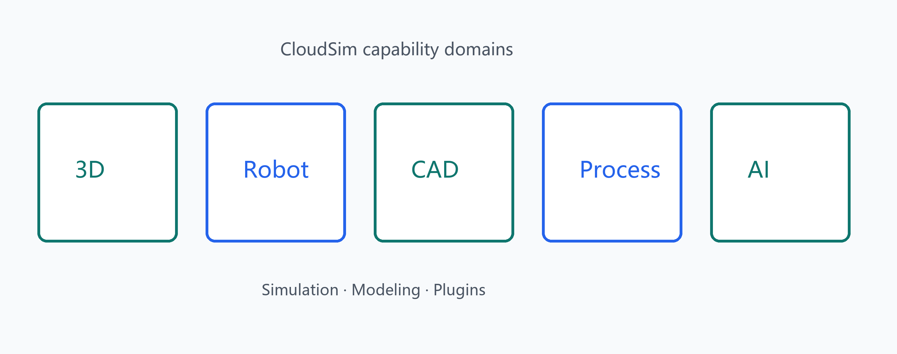

CloudSim is a desktop application for industrial robot simulation, covering 3D scenes, robot programming and trajectories, geometric modeling, engineering drawings, process-flow DES, plus plugins for point clouds, labeling, PLC, cameras, and an AI assistant.
help/zh or help/en entry.| Domain | Description |
|---|---|
| 3D scene | OSG rendering, picking, gizmo, annotations |
| Robot | URDF, FK/IK, instructions, trajectories, brand export |
| Geometry | OCC B-rep, sketches/features, point-cloud & mesh tools |
| AI | Domain-scoped chat for modeling, trajectories, process, etc. |
| Plugins | Dynamic DLLs for cloud, labeling, PLC, cameras, analysis |